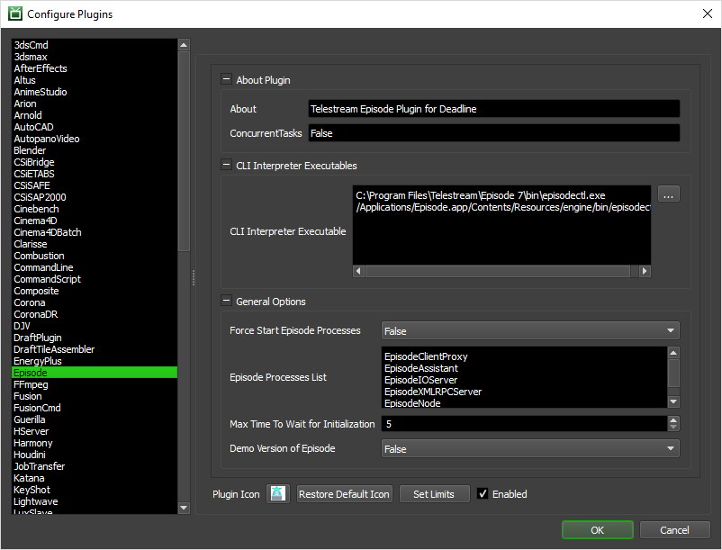

Episode¶
Overview¶
Supported for Telestream Episode is via 2 distinctly different workflows for your studio:
Monitor submitter will submit an Episode encoding job per input source file (movie) or image sequence to Deadline.
Monitor submitter will submit an Episode encoding job to an independent, already running Episode ‘cluster’.
Guidelines¶
Episode background processes MUST be running locally to submit an independent cluster job from the Deadline Monitor submitter. Additionally, these same Episode processes MUST be running on each Worker that performs an Episode encoding job via Deadline queue. In both cases, the Episode background processes can be started and stopped automatically by Deadline. The background processes must be started by
rooton macOS platform or someone with local admin rights to install a service on Windows platform. Alternatively, ensure the Episode background processes are already installed and running prior to submitting a Deadline job or independent Episode cluster job.When using the first workflow described above, Deadline Worker will apply Path Mappings to the various incoming/outgoing file paths to handle Telestream Episode executing in a mixed Windows/macOS environment.
All footage should be stored on a network file server, with the exception of the encoding *.epitask file which can be optionally included with the Deadline job submission as described in the first workflow in the above overview section.
When running Episode in a mixed-platform cluster, jobs requiring QuickTime are only submitted to nodes running on the same platform as the submitting node, because QuickTime does not support the same codecs across platforms.
If you are using third-party QuickTime components, make sure that the same components are installed on all nodes on each platform.
All computers in an Episode cluster must be on the same subnet.
If you have an Episode cluster, and you are using shared storage (SAN, NAS, etc.) then you should set the file cache path to the same location on all nodes in the cluster.
Make sure the ports aren’t blocked by a firewall. Episode uses ports between 40410 and 40440.
Ensure you create any *.epitask file with exactly the same version of Episode that will be used to execute any encoding job.
Job Submission¶
You can submit Telestream Episode jobs from the Monitor.
Submission Options¶
The general Deadline options are explained in the Job Submission documentation.
The Telestream Episode specific options are:
Selection Method: Choose the selection method by file or by directory.
Select by Directory: Choose a root directory to scan for all supported files.
Select by File: Choose by individual file selection.
Input Source Directory: Choose a root directory to scan for all supported files. Multiple image sequences will be resolved at submission time to only submit the first frame of each image sequence, due to how Episode handles image sequences for encoding. Duplicate image sequence files will be de-duplicated at submission time.
Process Sub-Directories: Optionally choose to scan sub-directories as well for supported files.
Input Source File(s): The path to the media file(s) to be encoded. It may be a media file(s) in any of the formats supported by Episode.
Encoder (*.epitask) File: The Episode encoder *.epitask file that will be used (required).
Submit Encoder File with Job: If enabled, the Encoder file will be uploaded to the Deadline Repository along with the Job (useful if the file is local). The default value is False.
Output Path (optional): The output path of the encoded output. If left blank, the job will output beside the Input Source File with the default naming convention. The default value is blank.
Custom Output Name (optional): Optionally, override the default output file naming convention. Built-in Episode $tokens are supported. The default value is blank.
Split and Stitch: If enabled, the encoder(s) will split the encoding and stitch to the final output. The default value is False. Additional split options are:
Minimum Split Duration (sec): Specify minimum duration in seconds for each split. The default value is 30.
Maximum Number of Video Splits: Specify maximum number of splits created. The default value is 16.
Additional CLI Arguments (optional): Any additional command line arguments to be submitted. The default value is blank.
Cluster Submission: 2 options are available:
Disabled: No cluster encoding will take place. An Episode standalone job will be submitted to the Deadline queue.
Submit To Independent Cluster: Submit the encoding job to an existing Episode cluster on the network outside of Deadline queue. This will not submit a job to the Deadline queue.
Cluster Name (Bonjour required): If clustering enabled, the name of the cluster that you wish to use for encoding (requires Bonjour to work).
Hostname / IP Address: If clustering enabled, the hostname or ip address of the cluster’s master node that you wish to submit to for encoding. (Alternative to using the Cluster Name).
Plugin Configuration¶
You can configure the Episode plugin settings from the Monitor. While in power user mode, select Tools -> Configure Plugins and select the Episode plugin from the list on the left.
CLI Interpreter Executables
CLI Interpreter Executable: The path to the Telestream Episode CLI Interpreter executable file used for encoding. Enter alternative paths on separate lines.
General Options
Force Start Episode Processes: Enable to force start the required background Episode processes for encoding to take place. The default value is False.
Episode Processes List: When ‘Force Start Episode Processes’ is enabled, this is the list of Episode process names to start. By default, these processes are:
EpisodeClientProxy
EpisodeAssistant
EpisodeIOServer
EpisodeXMLRPCServer
EpisodeNode
EpisodeJSONRPCServer
Max Time To Wait for Initialization: If ‘Force Start Episode Processes’ is enabled, this is the max time to wait for initialization of background Episode processes in seconds. (Default: 5 seconds).
Demo Version: Enable if you are using the demo version of Episode. A watermark will be applied automatically by Episode. The default value is False.
FAQ¶
Is Episode supported by Deadline?
Yes.
Can I submit on macOS and encode on Windows with Episode or vice-versa?
Yes, Deadline supports this workflow in terms of job submission and execution across the 2 platforms that the Episode application supports. However, please see our Guidelines section which highlights a number of limitations due to codec support.
Error Messages and Meanings¶
This is a collection of known Episode error messages and their meanings, as well as possible solutions. We want to keep this list as up to date as possible, so if you run into an error message that isn’t listed here, please visit the Thinkbox Help Centre and let us know.
STDOUT: *** Error: Failed to open file file:/Z%3a/H264%20MOV%20640x360.epitask (The system cannot find the path specified.)
On Windows only, Episode uses Bonjour and can’t use a mapped drive or a local drive letter for a network share. One option is to configure Episode “Named Storage” paths on Windows. UNC file paths are currently broken in Episode 7.4 on Windows.
STDOUT: *** Error: Not connected to local IOServer, unable to share
The local Episode IOServer service/daemon is unavailable for connection. Ensure you start the Episode IOServer service/daemon on the Worker machine either via
rootuser account or use the Plugin Configuration settings to force start the Episode processes (requiringrootuser account).
STDOUT: *** Error: Failed to connect to ClientProxy
The Episode processes are not running on the Worker machine. Please start the services on the Worker machine either via
rootuser account or use the Plugin Configuration settings to force start the Episode processes (requiringrootuser account).
Error submitting Episode job: *** Error: Unknown component: filter chmp
If the Episode background processes are not running, then you will see the above error. For an Episode job to be successfully submitted to an existing standalone Episode cluster or for a Deadline Worker to process the Episode job locally, the Episode background processes must be already running on this submitting machine. Episode interaction is automatically executed by Deadline via the
episodectlbinary executable which has a limitation that it must be run asrootor with a user account withsudopermissions to execute.

{kind=link}
{kind=link}
{kind=link}